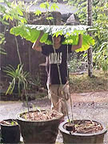

「スリランカでボランティアをするにあたって、自分の英語力を高めたいと思い、いろいろ探していたところ、他のプログラムよりも金額が安く、学生の私でも手が届くプランだったから参加を決めました。
初めてのホームステイだったのですか、あっという間の三か月でした。
とても優しいホストファミリーに出会うことができ、毎日がとても楽しかったです。
お客さんが来る日に、壁を飾ってホストマザーとケーキを作ったり、レッスン後に近所の子どもたちと遊んだり、ホストファミリーだけでなくワラカポーラの人たちも大好きになりました。
低開発村視察はこの村だけに限ったことではないのですか、スリランカでの生活経験を経て、いかに自分の生活が物によって支えられているのかを感じました。
二年前にもスリランカを訪れたことがあるのですが、今回の滞在では旅行とは違った目線からスリランカを見ることができました。
観光地に行かなくても美しいものをたくさん感じることができる国だと思いました。
前回はスリランカのホテルに滞在していたので毎日ホテルの料理や外食をしていました。
その際私はスリランカ料理が苦手だなと思いました。
しかし、ホームステイ先のホストマザーの料理はとてもおいしく、今回の滞在でスリランカの料理がとても好きになりました。